A1
Some Sample images used in this Lab are shown below.


Some Sample images used in this Lab are shown below.
In this part, we estimate the homography matrix H that maps points from one image to another. Using manually selected point correspondences, we build a linear system based on p' = H p and solve it in a least-squares sense to recover H. This transformation aligns the two images and serves as the foundation for image warping and mosaicing in later sections.


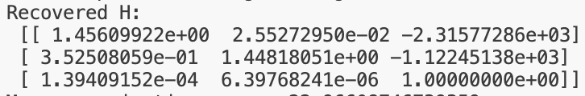
In this part of the project, I used the homography matrix from A.2 to actually warp and align images.
The homography describes how every point in one image maps to another view of the same plane. Using this mapping, I can take an image, “look at it” from a different viewpoint, or make a tilted object appear front-facing - a process called rectification.
How it works:
Instead of moving each source pixel to its new position (which would leave gaps or “holes”), I implemented inverse warping. That means for each pixel in the output image, I look up where it came from in the source image using the inverse of the homography. This ensures that every output pixel gets exactly one value, and the result looks complete and continuous.
To make sure the whole warped image fits into the frame, I first project the four corners of the original image through the homography and use their bounding box to define the output canvas size. This way, even if the image is rotated or stretched, no parts are cut off.
Finally, since the mapped source coordinates are usually not integer pixel locations, I implemented two different interpolation methods to decide how to compute pixel values from nearby samples.
Interpolation methods:
Nearest Neighbor Interpolation simply rounds each mapped coordinate to the closest pixel in the original image. It’s very fast and easy to compute, but it produces visible “steps” and jagged edges, especially for diagonal lines or when the image is scaled down.
Bilinear Interpolation uses the four surrounding pixels and takes a weighted average based on how close the mapped coordinate is to each one. This results in smoother transitions and fewer artifacts, especially for natural images or text, but requires more computation.
In my code (warpImageNearestNeighbor and warpImageBilinear), both methods are implemented from scratch - no external interpolation functions are used. Each method also handles both grayscale and RGB images and uses a white background for pixels that fall outside the valid image area.
Testing:
To test my implementation, I performed image rectification: I took a photo of a rectangular object (like a poster or a painting), clicked its four corners, and defined a perfectly rectangular target shape. Using the computed homography, I warped the original image so that the object appeared front-facing and undistorted.
Both interpolation methods produced correct results, but the differences in quality were clear:
• Nearest neighbor was faster but produced rougher edges and visible aliasing.
• Bilinear interpolation was slower but gave much cleaner and more natural-looking results.
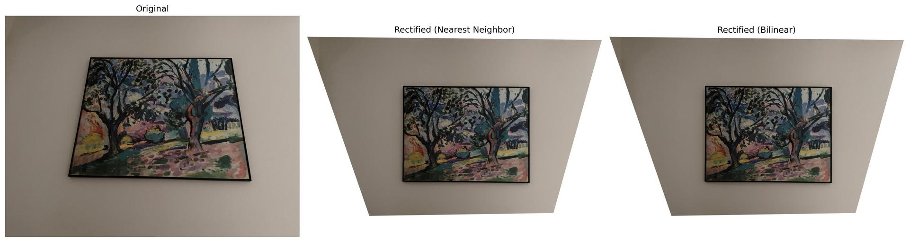

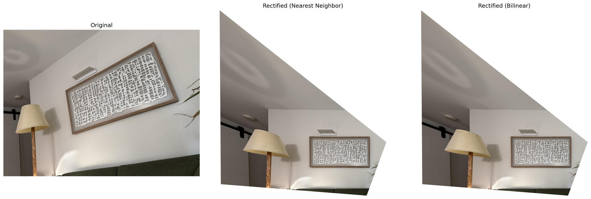

Discussion:
Speed vs. quality:
Nearest neighbor is computationally cheaper, so it’s useful for quick previews or binary images (like masks). Bilinear interpolation takes slightly longer but gives a far better visual result for photographic images.
Handling image boundaries:
I handled pixels that map outside the source image by filling them with white. In practice, one could also use an alpha mask to keep track of valid pixels and blend multiple warped images later for the mosaics.
Numerical considerations:
Predicting the output canvas in advance avoids clipping and makes sure the full warped image is visible. Using inverse warping prevents missing pixels, which would otherwise occur if we tried to forward-map each source pixel.
Overall, this task demonstrates how the homography can be used to transform entire images, and how the choice of interpolation affects both visual quality and computational performance. The rectification examples confirm that the pipeline, from selecting points to computing H and warping the image, works robustly for different viewpoints.
To combine several overlapping images into one seamless panorama, I implemented a complete mosaicing pipeline. The goal was to align multiple pictures so that their overlapping regions match and then blend them together smoothly without visible boundaries.
Step 1: Collecting correspondences
For each pair of consecutive images, I manually selected corresponding points. Distinct features that appear in both pictures, such as corners or texture details. To make this process easier and more reliable, the selected points were numbered on the first image and displayed while selecting matches on the second.
Step 2: Aligning the images
From these point pairs, transformation matrices (homographies) were computed that describe how one image can be projected onto another. Instead of warping one image at a time and accumulating distortions, all images were transformed into a common coordinate system defined by a central “anchor” image. This creates a consistent geometric frame where all images fit together naturally.
Step 3: Creating the mosaic canvas
Before warping, I determined the overall area that all images would cover once projected. A white background of that size was created so that every image could be placed within it. Each picture was then warped once into this shared canvas.
Step 4: Blending the overlaps
To avoid sharp transitions where the images overlap, I used alpha blending.
Each image has an internal weighting mask (alpha channel) that gives full weight in the middle and gradually decreases toward the edges. When two or more images overlap, their pixel values are averaged according to these weights. This method produces smooth, soft transitions instead of visible borders, while keeping the outer edges of the mosaic crisp and white.
Step 5: Results
The resulting panoramas show three successful mosaics with their original input images. Weighted averaging effectively removed the strong edge artifacts that occur when one image simply overwrites another.
Compared to more complex techniques such as Laplacian pyramids, simple alpha blending already produced high-quality results with clean transitions and minimal computation. However, advanaced method would result in better blending and transitions.


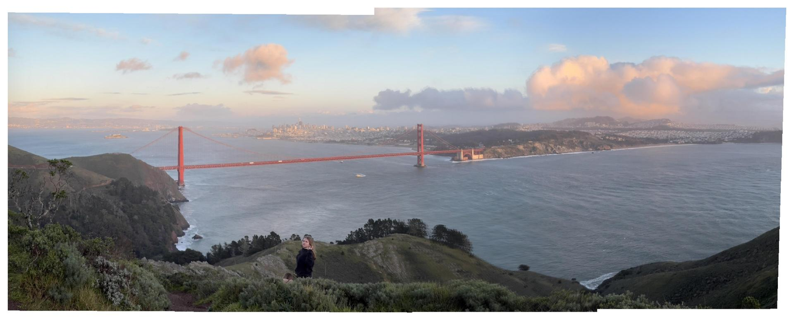

The first step of this project was to automatically detect interest points in the image — specific locations that are distinctive and easy to recognize again, even if the viewpoint or lighting changes. Such points usually occur at corners, intersections, or textured areas, and serve as reliable anchors for matching images later when creating mosaics.
Harris Corner Detection
The Harris Corner Detector is one of the most widely used methods for finding such points. The key idea is that a “corner” is a region where the brightness of the image changes significantly in two different directions. For example, the corner of a window frame or the tip of a roof.
In contrast:
- A flat region (like the sky) looks similar in every direction, so it has little distinctive information.
- An edge has variation in only one direction, making it ambiguous because shifting along the edge doesn’t change much.
- A corner or intersection changes in all directions and is therefore unique and stable.
In practice, the algorithm looks at how much the image intensity varies when you slightly shift a small window in different directions. If the intensity changes a lot in every direction, that window is considered a strong corner.
In this project, I used the provided harris.py implementation to compute the Harris response for each pixel. Bright areas in the response map indicate strong corner-like behavior. To keep the results clean, I ignored points near the image boundary and filtered out weak responses based on a relative threshold. This produced several thousand initial corner candidates across the image.
Adaptive Non-Maximal Suppression (ANMS)
While the Harris detector finds many potential corners, they are not evenly spread out. Most of them tend to cluster in highly textured regions - for example, on the grass or in the trees - while leaving smoother areas almost empty.
To address this, I applied Adaptive Non-Maximal Suppression (ANMS).
ANMS keeps only those corners that are both strong and well spaced apart. It does this by assigning each corner a kind of “personal space”: weak corners that lie too close to stronger ones are discarded, while strong and isolated corners are preserved. This ensures that the final set of points covers the entire image in a more balanced way, focusing on the most informative regions such as the corners of buildings, windows, or architectural details.
Results
The first figure below shows the Harris response map. Bright areas correspond to image regions with high local variation, while dark areas are uniform. As expected, most strong responses appear along edges and corners of the buildings, the tower, and the people sitting in the grass.
The second figure compares the corners before and after ANMS:
- The left image shows all detected Harris corners (in red). They are dense and often overlap, especially in regions with repetitive textures.
- The right image shows the result after ANMS (in green). The corners are now more evenly distributed, with a focus on prominent, structurally meaningful features.
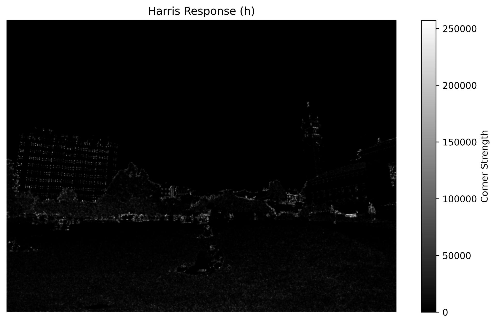
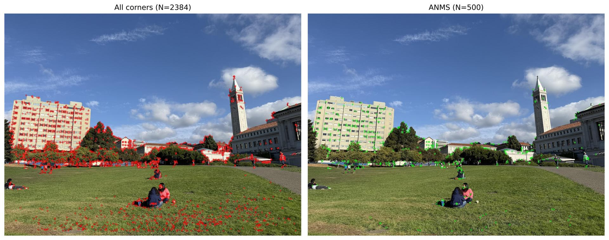
After detecting reliable interest points with the Harris Corner Detector, the next step is to describe what each of those points looks like — in other words, to give each corner a compact numerical “fingerprint” that captures its local visual appearance. The goal of these feature descriptors is to make it possible to recognize the same physical point in different images, even if the lighting or viewpoint changes slightly. A good descriptor should be distinctive enough to tell different locations apart, but also robust enough to still match when the same structure appears under slightly different conditions.
In this part of the project, I implemented simple axis-aligned feature descriptors based on small image patches around each detected corner. For every interest point, I extracted a 40×40 pixel window centered on the point and then reduced it to an 8×8 descriptor. The larger window is important because it captures more context around the feature and introduces a natural amount of blurring when it is downsampled. This blurring smooths out fine textures, such as grass or tree leaves, which tend to vary a lot between images, while preserving the overall shape of larger, more stable structures like building edges or window corners.
Each 8×8 patch was then bias/gain normalized, meaning that its mean intensity was subtracted and the result divided by its standard deviation. This makes the descriptor largely invariant to changes in brightness or contrast. Without this normalization, two otherwise identical patches could look very different numerically if one image were slightly darker or brighter than the other. By normalizing them, the descriptor focuses on the relative pattern of light and dark areas rather than absolute intensity values. Finally, each normalized 8×8 patch was flattened into a 64-dimensional vector that can later be compared with other vectors using simple distance measures.
This approach is intentionally kept axis-aligned, without rotation invariance, as required for this step. The idea is to keep the implementation simple while still producing stable descriptors that are robust to small shifts or brightness changes. The use of the large 40×40 window already provides a good level of tolerance to such variations.
The first figure below shows where these descriptors were extracted in the image. The green points mark the sample locations, which are spread across corners and high-contrast regions such as window frames, building edges, and the clock tower. These are the points that will later be used for image matching.
The second figure shows a selection of the extracted 8×8 normalized patches. Each one represents the local image structure around a corner in a highly compressed form. You can see that most patches contain smooth gradients or clear transitions between bright and dark areas. This is the result of the downsampling and normalization process, which removes unnecessary detail while preserving the essential shape information.
Overall, the descriptor extraction step transforms the visual information around each corner into a small, standardized representation that is easy to compare across images. The 40→8 downsampling ensures robustness to noise and small misalignments, while normalization ensures consistency under varying lighting. Together, these choices produce descriptors that focus on stable, large-scale image structures — the kind of features that can later be matched reliably between overlapping photographs when building the final image mosaic.
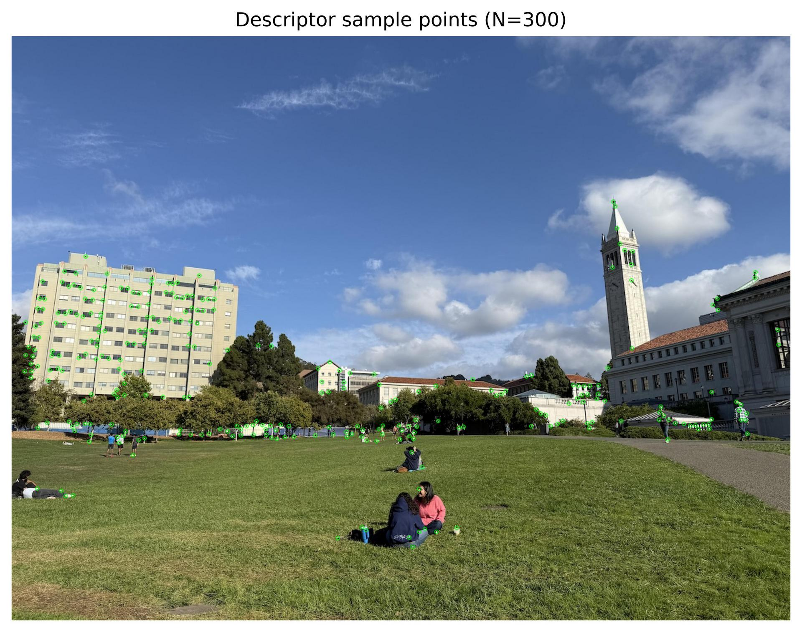
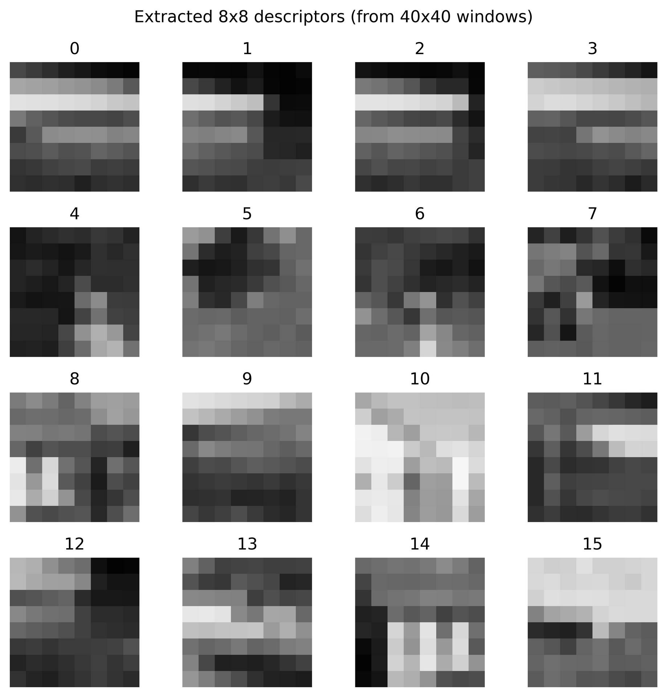
Once distinctive features have been detected and described in both images, the next step is to figure out which features correspond to the same physical points across the two views. This process, called feature matching, is what connects the images together and it provides the raw correspondences needed later to estimate transformations and build mosaics.
The core idea is straightforward: if two descriptors (the 8×8 normalized patches from the previous step) look very similar, they likely represent the same corner or structure seen from slightly different viewpoints. To find these correspondences, every descriptor from the first image is compared to every descriptor from the second image. The comparison is done by measuring the Euclidean distance between descriptor vectors. A small distance means the patches are similar in appearance.
However, simply picking the nearest neighbor (the smallest distance) is not always reliable. Many parts of an image can look alike, such as the repeating patterns of windows or the texture of grass. In these cases, a descriptor may have multiple close matches, and choosing only the closest one could easily lead to false matches.
To make the matching more robust, I used the Lowe ratio test, a well-known technique introduced in the SIFT paper. Instead of looking only at the single best match, it considers the ratio between the distance to the best match and the distance to the second-best match. If the best match is truly distinctive, it should be much closer than the second-best one. If both are similarly close, the point is probably ambiguous and should be discarded. In this project, I used a ratio threshold of 0.5, which means that the best match had to be at least twice as good as the second-best one to be accepted. This is a conservative threshold that removes most incorrect matches while keeping enough good ones for geometric alignment.
In addition to the ratio test, I also applied a mutual nearest neighbor check. This ensures that the match works in both directions: if a feature in image A claims a best match in image B, the same feature in image B must also claim that point in image A as its best match. This simple step filters out many one-sided or inconsistent correspondences that often occur in textured or repetitive regions.
After applying these two filters, I visualized the remaining correspondences by drawing colored lines between the matching points across the two images. The example below shows the result for one image pair. Each line connects a point in the left image to its corresponding point in the right image. Most of the lines align well with the same structures — the building edges, windows, and the clock tower — indicating strong geometric consistency. Some mismatches still remain, particularly in low-texture areas like the sky or grass, but these will be filtered out in the next step using RANSAC.
Overall, this step establishes a set of tentative correspondences between images that are based purely on visual similarity. The use of the Lowe ratio test ensures that these correspondences are distinctive and less affected by repetitive textures, while the mutual nearest neighbor constraint enforces consistency. These matched pairs form the foundation for the following stage, where we will use RANSAC to estimate the transformation between the images and discard any remaining outliers.
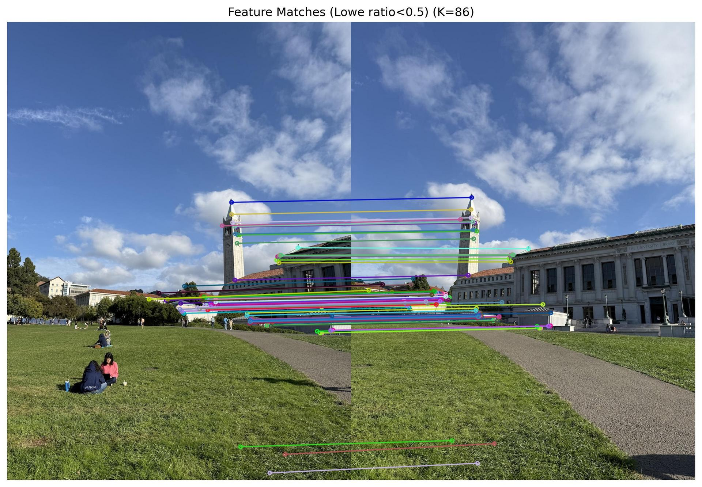
The final part of the project brings everything together into a fully automated image stitching pipeline. The goal of this step is to estimate reliable geometric relationships between overlapping images and use them to create seamless panoramas. This requires a method that can cope with noisy or incorrect feature matches.
RANSAC, which stands for Random Sample Consensus, is a simple yet powerful algorithm for robust model fitting. When matching features between two images, not every match is correct. Even with filtering techniques such as the Lowe ratio test, some mismatches remain due to repetitive patterns, reflections, or small local differences. A direct least-squares computation of the homography would be strongly influenced by such outliers, often producing distorted results. RANSAC addresses this by repeatedly sampling small random subsets of matches and evaluating which subset best represents the majority of the data.
In this project, I implemented 4-point RANSAC to estimate the homography between two images. The algorithm works by repeatedly selecting four random correspondences (the minimum number needed to define a homography), computing a candidate transformation, and then testing how well that transformation maps all the other points. For each candidate, the algorithm projects the points from the first image into the second using the current homography and measures the alignment error. Points whose reprojection error is below a small threshold are counted as inliers. The model that produces the largest number of inliers is considered the best. Finally, a refined homography is recomputed using all inliers, producing an accurate and stable transformation. This process effectively ignores incorrect matches while keeping the ones that are geometrically consistent, allowing for precise image alignment even in the presence of significant noise.
Once the robust homographies were estimated, I used them to build automatic mosaics. For each set of three images, I detected corners automatically using the Harris detector, extracted normalized 8×8 patch descriptors, and matched features between consecutive pairs using the Lowe ratio test and mutual nearest-neighbor filtering. Then, I used RANSAC twice: Once to estimate the transformation between the left and middle image, and once between the middle and right image. The middle image serves as the anchor of the panorama, meaning that all other images are warped into its coordinate system. The left image is aligned to the middle using the homography from RANSAC, and the right image is aligned using the inverse of the homography between the middle and right images.
To stitch the images together, I reused and combined several helper functions from Part A, but implemented the stitching process explicitly in B4. First, the corners of all warped images are projected using their homographies to determine the global bounding box of the panorama. Then, each image is warped once into this shared coordinate space. A smooth alpha mask is created for each image so that overlapping areas can be feather-blended, producing smooth transitions without visible seams. This blending is performed using a weighted averaging scheme that accumulates pixel values from all warped images and normalizes by their combined weights. Finally, the accumulated result is normalized and converted back into a clean, blended mosaic.
The resulting panoramas demonstrate that the RANSAC-based approach successfully rejects incorrect correspondences and aligns the images with high geometric accuracy. The blending step further smooths out brightness variations and exposure differences, producing a visually seamless panorama. Compared to manual stitching, the results are similar in quality but require no human input - the entire process, from detecting corners to producing the final mosaic, runs automatically.
In summary, the RANSAC algorithm provides the robustness needed to handle outliers in feature matches and makes it possible to automatically estimate accurate homographies between images. By warping the left and right images into the middle image’s coordinate frame and blending them with smooth feathering, the final implementation in B4 achieves fully automatic, high-quality panoramas. The pipeline now integrates every component developed in previous steps - detection, description, matching, robust estimation, and blending - into a single, end-to-end system for automatic image mosaicing.
Images
Hand Selected points
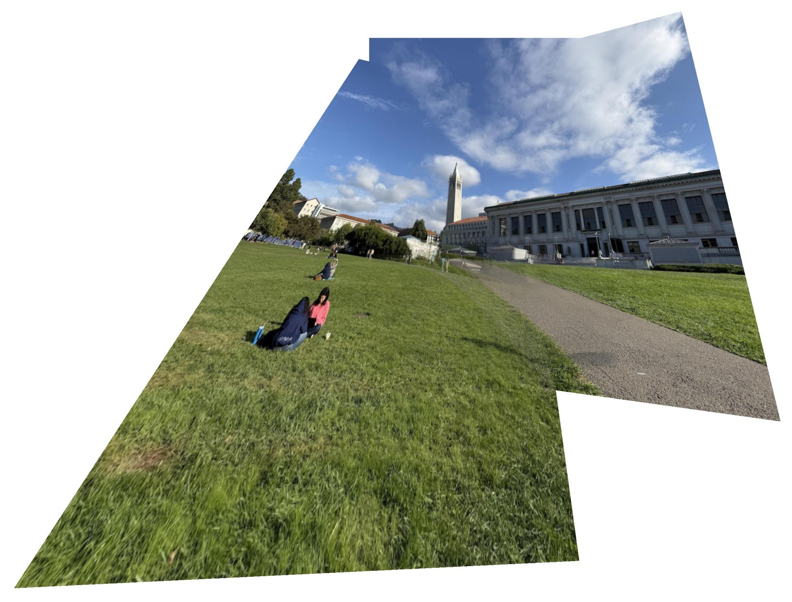
Feature Matches
RANSAC Algorithm
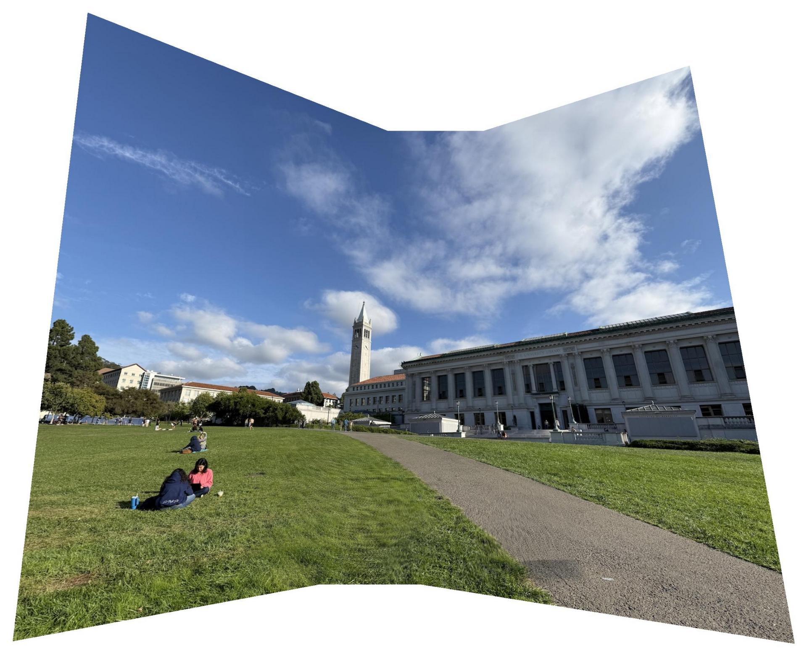
Images
Hand Stitched
Features
RANSAC stitched
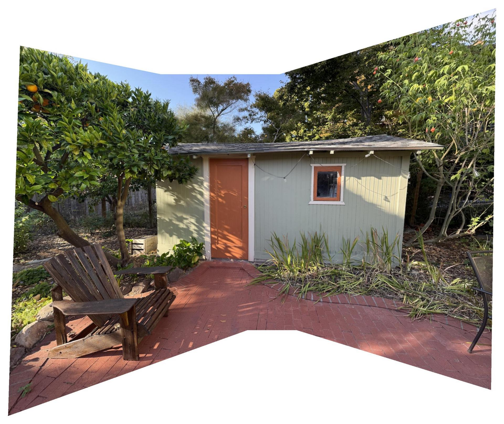
Images
Hand stitched
Features
RANSAC stitched
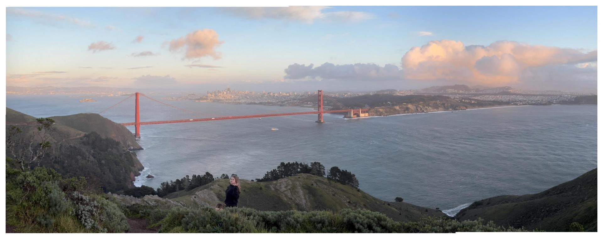